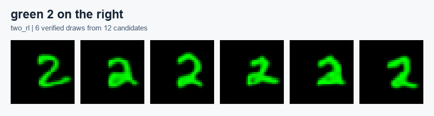
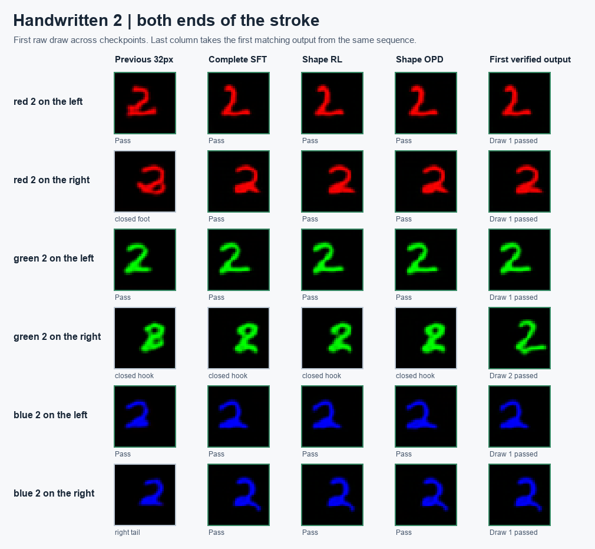
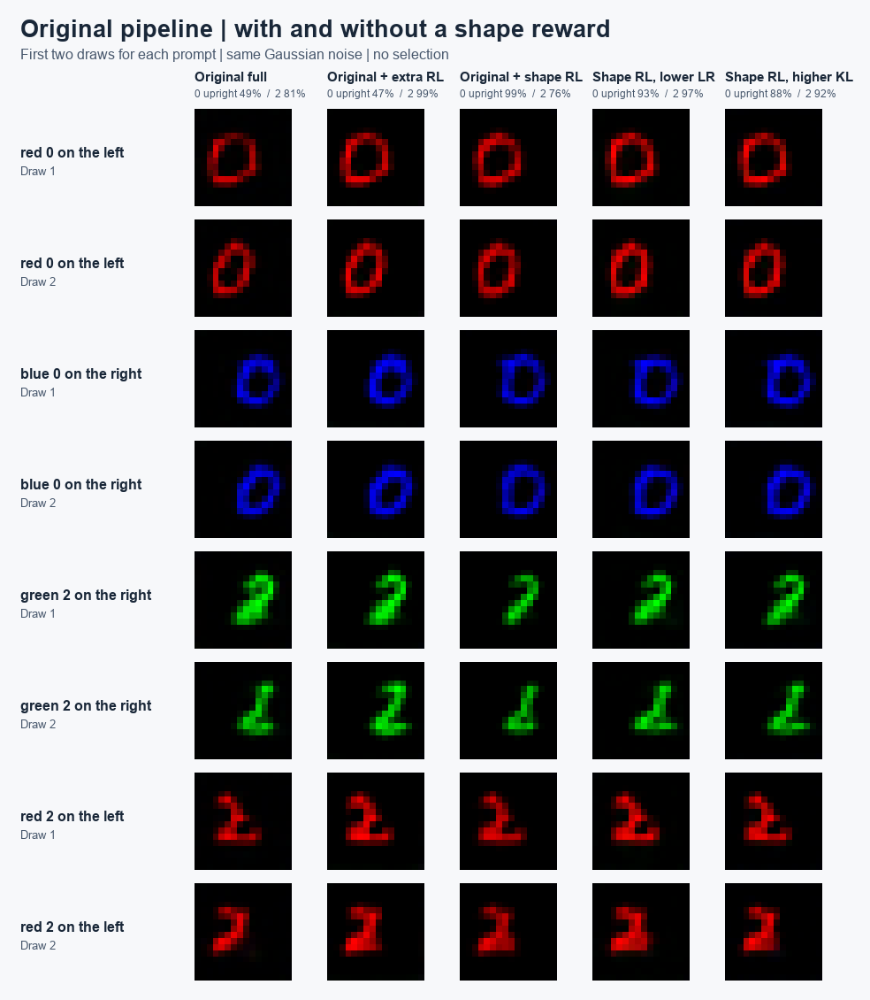
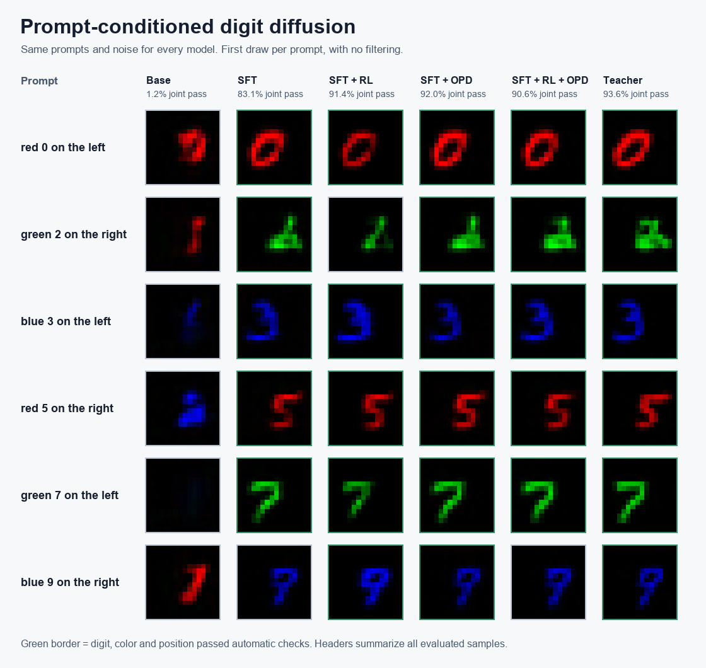
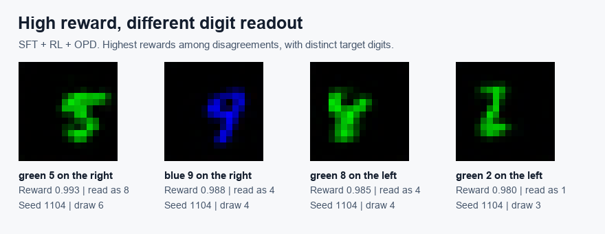

MNIST 生成模型后训练
让生成的「2」
保住每一笔
在公开 MNIST 上跑通 SFT、RL 和 OPD。通过人工审图发现字形问题，用消融实验验证改动，最后让程序检查左上起笔、左下转折和右下尾笔。
项目方向与评审 @wzihao-byte实现与实验 Codex 协作

项目推进
从观察到可检验的改动
每一轮都从实际生成图出发。由 @wzihao-byte 判断哪里出了问题、选定该测的改动，再与 Codex 协作实现并跑实验。
-
先把后训练流程跑通
项目要求 用公开数据实际运行 SFT、RL 和 OPD，并展示各阶段的图。
实验结果 用同一组提示和噪声比较检查点。三组训练种子中，SFT 为 83.89%，SFT → RL 为 91.01%，SFT → OPD 为 91.74%，三阶段完整链路为 91.46%。
代码与三组种子结果 -
指出「0」倾斜和「2」模糊，要求逐项验证
项目判断 通过率上升后，仍能从样图里看到倾斜和弱笔画。选定分辨率、困难样本、损失函数和奖励四项做对照。
实验结果 低置信度难例增采样会让「2」更弱，前景加权会损伤其他数字。原链路追加半学习率的形状 RL 后，两个训练种子的「0」直立、「2」可读且笔画足量及其他数字通过率都提升。
消融数据与固定样图 -
发现缺笔的位置，明确最后的验收条件
项目判断 「2」仍可能左侧不显示，或右下尾笔短缺。明确要求左右两端都清楚可见。
实验结果 筛出 1,909 个完整的 MNIST「2」做专项训练。推理逐段检查左上起笔、左下转折和右下尾笔，必要时重抽。默认权重选用 SFT 与形状 RL 的结果。
训练与验收代码
实测结果
把数字和样图放在一起看
旧 32×32 与新模型在同一组提示与噪声下各生成 1,152 张。表里是重抽前的结果。
| 检查项 | 旧版 | 专项 SFT + 形状 RL |
|---|---|---|
| 左上起笔可见 | 72.6% | 98.5% |
| 右下尾笔可见 | 87.8% | 97.8% |
| 完整笔画与独立识别均通过 | 40.8% | 82.2% |


默认推理测试覆盖六种颜色与位置组合，共 24 次请求。交付的 96 张均通过笔画复验，且被独立评估器识别为「2」。专项追加 OPD 后的严格通过率为 76.0%，默认权重取表现更高的形状 RL。
两个训练种子。表中「0」直立要求倾斜角 ≤10°，「2」通过同时要求可识别且笔画足量。
| 原链路与追加训练 | 「0」直立 | 「2」笔画足量 | 其他数字通过 |
|---|---|---|---|
| 原始完整链路 | 47.6% | 79.5% | 91.9% |
| 追加普通 RL | 51.4% | 92.7% | 95.4% |
| 追加形状 RL | 99.3% | 88.2% | 94.9% |
| 形状 RL，半学习率 | 95.8% | 97.6% | 96.6% |


每个阶段三组训练种子，共评估 2,880 张图。联合通过要求数字、颜色与左右位置正确。
| 路径 | 联合通过率 |
|---|---|
| SFT | 83.89% |
| SFT → RL | 91.01% |
| SFT → OPD | 91.74% |
| SFT → RL → OPD | 91.46% |


查看高奖励但识别结果有分歧的样本

复现
生成自己的样例
仓库保留各轮的源码、训练权重、配置、日志及逐图评估。项目衡量 MNIST 字形及颜色和位置遵循，最终手写字图使用 32×32 画布。
cd experiments/03-complete-digit-two
python -m pip install -r requirements.txt
python verify_two.py --prompt 'green 2 on the right'